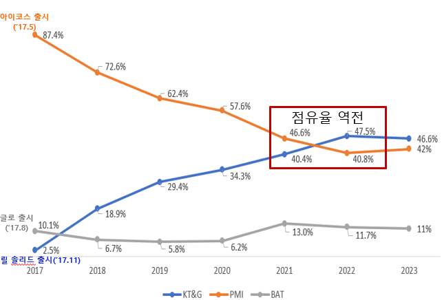
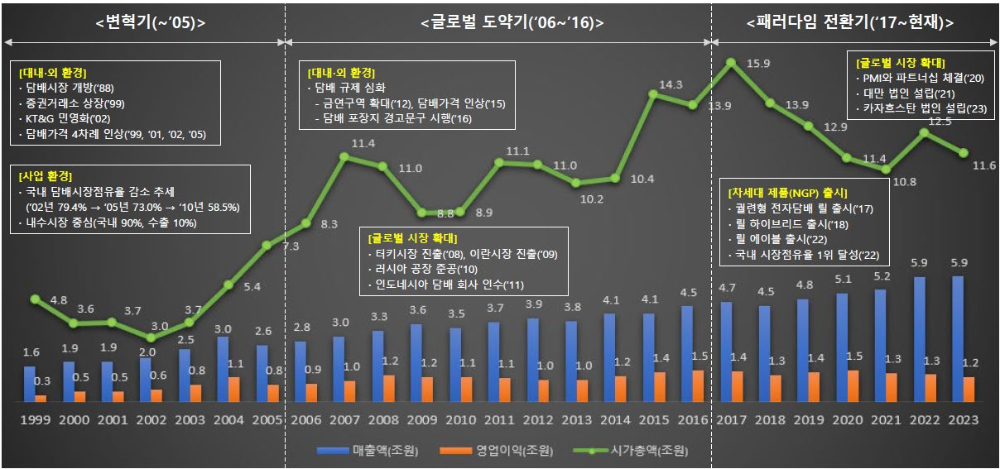
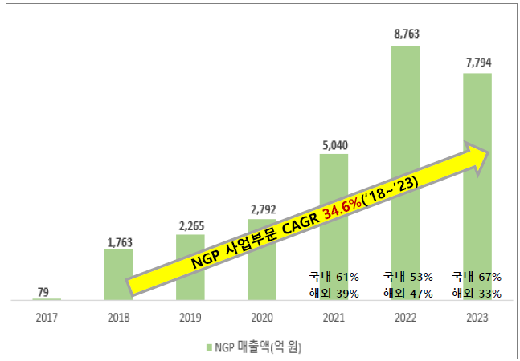
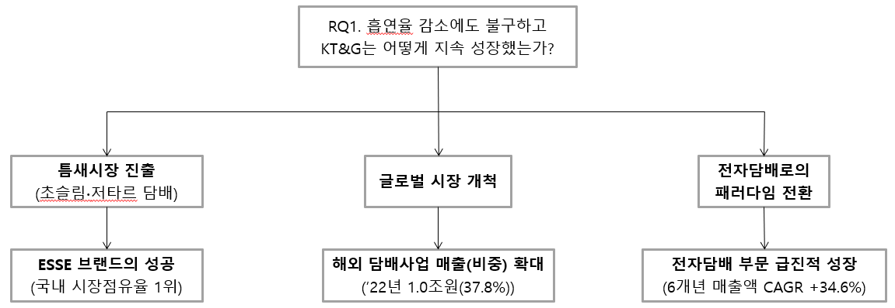

세계 주요 37개국의 매일흡연율 평균은 2011년 20.6%에서 2021년 15.9%로 감소했다. 이는 담배연기 없는(Smoke-Free) 세상으로 시대적 전환이 이루어지고 있음을 의미한다. 그런데 국내 최대 담배 제조사 KT&G는 이런 악조건에도 최대 실적을 달성하고 있으며, 궐련형 전자담배 시장에서는 후발주자로 출발해 2022년, 2023년 모두 글로벌 경쟁사들을 제치고 시장점유율 1위에 올랐다. 본 연구는 기술경영 관점에서 KT&G가 성장할 수 있었던 배경과 혁신전략을 분석한다.
- 20세기 중반부터 담배의 유해성이 과학적으로 입증되면서 각국의 담배 규제와 금연 운동이 강화되었고, OECD 주요 37개국의 매일흡연율 평균은 2011년 20.6%에서 2021년 15.9%로 감소하는 등 Smoke-Free 세상으로의 시대적 전환이 이루어지고 있다.
- 이런 악조건에도 불구하고 국내 최대 담배 제조사 KT&G는 최대 실적을 달성하고 있으며, 국내 궐련형 전자담배 시장에서 2022년과 2023년 모두 글로벌 경쟁사들을 제치고 시장점유율 1위를 달성했다.
- 기술경영 관점에서 분석한 결과, KT&G 지속 성장의 배경에는 초슬림·저타르 '에쎄'의 틈새시장 진출, 글로벌 시장 개척, 전자담배로의 패러다임 전환이 있었고, 그 공통분모는 부정적 외부효과의 최소화였다.
- 후발주자로서 궐련형 전자담배 시장점유율 1위를 달성한 것은 선도자의 소비자 Lock-in을 해제한 Fast Follower 전략, 특허 혁신을 통한 전유성 확보, 원천기술의 기술사업화 성공에 힘입은 것이다.
1. 서론 — 연구배경 및 목적
KT&G는 1987년 한국전매공사라는 공기업으로 창립해 1989년 한국담배인삼공사로 사명을 변경했고, 2002년 12월 민영화되었다. 2023년 기준 전체 매출액 5.9조 원 가운데 담배사업이 3.6조 원(61.6%)을 차지하는 주력사업이다. 흡연을 둘러싼 부정적인 상황에도 2023년 연결 기준 매출액 5.9조 원, 영업이익 1.2조 원을 달성했고, 담배사업 부문 매출액의 최근 6개년 연평균성장률(CAGR)은 8.66%로 과거보다 오히려 빨라지고 있다. 이 성장세는 궐련형 전자담배(Heat Not Burn, HNB) 사업과 관련이 깊다. 2017년 5월 필립모리스의 아이코스, 8월 BAT의 글로에 이어 11월에야 릴 솔리드를 출시한 KT&G는 국내 시장의 후발주자였으나, 출시 5년 만에 시장점유율 1위(47.5%)를 달성했다.

2. 이론적 배경 — 담배산업 분석과 Pavitt's Taxonomy
담배 제품의 소비는 필연적으로 부정적 외부효과(Negative Externality)를 동반한다. 흡연은 흡연자 본인뿐 아니라 간접흡연자의 건강에도 해로우며, 정부는 세금 부과와 경고 그림 의무화, 금연구역 확대 등 규제를 강화해 왔다. 선행연구를 종합하면 담배 제조사에게는 규제가 비교적 느슨한 해외 시장 공략과 궐련 대비 부정적 외부효과가 적은 전자담배 시장 선점, 그리고 냄새 저감·유해성 감소 등의 제품 혁신이 필요하다는 시사점이 도출된다.
2020년 글로벌 담배 시장 규모는 약 8.5천억 달러로 궐련이 84.1%를 차지하지만, 4개년(2017~2020) CAGR은 궐련형 전자담배 53.5%, 액상형 전자담배 23.1%, 궐련 2.7%로 전자담배의 성장세가 두드러진다. 국내에서는 궐련형 전자담배 판매량 비중이 2017년 2.3%에서 2023년 16.9%로 빠르게 확대됐다. KT&G는 국내 궐련의 약 66%, 궐련형 전자담배의 약 47%를 점유하는데, 글로벌 Key Player들이 진출해 있음에도 자국 담배회사가 60% 넘는 점유율을 유지하는 것은 세계에서 KT&G가 거의 유일하다.
Pavitt's Taxonomy 관점에서 궐련산업은 공정혁신이 기술궤적이고 상표·마케팅 등 비기술적 요소가 전유체계를 결정하는 공급자주도형인 반면, 전자담배 산업은 전기식 가열장치가 핵심인 과학기반형으로 R&D를 통한 기술혁신과 특허 출원을 통한 전유성 확보가 중요하다.
3. KT&G 사례분석
3.1 Historical Timeline — 변혁기·글로벌 도약기·패러다임 전환기
변혁기(1987~2005)의 가장 큰 변화는 1988년 국내 담배시장의 완전 개방이었다. 글로벌 담배 회사들이 막강한 자금력과 브랜드 인지도를 앞세워 국내 시장을 위협했고, 2002년 말 민영화까지 겹치며 공기업 DNA가 강했던 KT&G는 생존 자체를 위협받았다. 글로벌 도약기(2006~2016)에는 금연구역 확대(2012), 담배 가격 2,000원 인상(2015), 경고문구 시행(2016) 등 규제가 심화되자 터키(2008)·이란(2009)·러시아(2010) 공장 설립, 인도네시아 트리삭티 인수(2011)로 해외 시장을 적극 공략했다. 패러다임 전환기(2017~현재)에는 주력 사업이 궐련에서 HNB로 전환되고 있으며, HNB 사업은 2018~2023년 CAGR 35%를 기록하며 급성장했다.

3.2 성장전략 분석 — 틈새시장·글로벌·패러다임 전환
틈새시장 진출. 글로벌 궐련 시장의 약 96%는 두께 7.8mm의 레귤러 타입이 차지한다. 레귤러 시장은 이미 글로벌 메이저 업체들이 장악해 현실적으로 경쟁이 어렵다고 판단한 KT&G는 1996년 두께 5.4mm의 초슬림형 궐련 '에쎄'를 출시해 틈새시장을 공략했다. 특이할 점은 단순히 얇은 궐련이 아니라 저타르 기술을 함께 접목한 것이다. 1996년 '에쎄 클래식'의 타르량은 개비당 6.5mg이었지만 2007년 '에쎄 수 0.1'은 0.1mg까지 감소시켰고, 입냄새 저감캡슐(2013년 '에쎄 체인지'), 손 냄새 저감 필터(2020년 '에쎄 체인지 프로즌') 등 스멜 케어 기술도 더했다. '얇은 담배는 보다 부드럽고, 순하고, 덜 유해하다'는 브랜드 이미지를 구축한 에쎄는 국내 시장점유율 30% 내외로 오랜 기간 1위를 지키고 있으며, 글로벌 초슬림 시장에서도 점유율 36%로 1위다.
글로벌 시장 개척. 여기서도 틈새시장 전략이 유효했다. 글로벌 빅3(필립모리스, BAT, JT)가 장악한 지역을 피해 중동, 러시아, 동남아시아 등 신흥국가를 공략했고, 시장진출 거점 결정에는 담배 수요뿐 아니라 문화적 특성, 소비자 트렌드, 외교적 관계까지 고려했다. 에쎄는 수출 시작(2001년) 10년 만에 연간 200억 개비 이상 팔리는 제품이 됐고, 전 세계 초슬림 담배 소비자 3명 중 1명이 선택하는 리딩 브랜드로 자리잡았다. 전체 담배사업 매출 중 해외 비중은 2007년 16%에서 2022년 38%로 커졌다 — 내수 독점기업에서 글로벌 담배 기업으로의 변화다.
전자담배로의 패러다임 전환. 기존 궐련은 600~900℃로 연소하며 유해 화학물질을 포함한 연기(Smoke)를 발생시키지만, HNB는 250~350℃로 스틱을 찌는 가열 방식이어서 연소 부산물이 없는 에어로졸(Aerosol)을 발생시키고 담뱃재와 냄새가 적다. KT&G는 릴 솔리드(2017), 릴 하이브리드(2018), 릴 에이블(2022)로 제품 포트폴리오를 다양화했고, 이 차세대 제품(NGP) 사업 매출액은 2018년 1,763억 원에서 2023년 7,794억 원으로 6개년 CAGR 34.6%를 기록하며 새로운 성장동력으로 자리매김했다. 나아가 2020년과 2023년(15년 장기계약) 필립모리스와 해외 판매 계약을 체결해, 한국을 제외한 글로벌 시장에서 필립모리스가 KT&G의 무연제품을 전속 판매하게 됐다. 이 계약으로 향후 15년간 해외 NGP 매출액 CAGR 20.6%를 달성할 것으로 추정된다.

3.3 혁신전략 분석 — Fast Follower, 특허 혁신, 기술사업화
Fast Follower. HNB 제품은 10만 원 상당의 디바이스 구매가 필수라 전환비용(Switching Cost)이 높고, 선도자 필립모리스는 아이코스를 한번 구매하면 전용 스틱 히츠(HEETS)를 지속 구매해야 하는 소비자 Lock-in을 형성했다. 후발주자 KT&G의 릴 솔리드는 배터리와 가열장치를 일체형으로 설계해 5분 충전이 필요했던 아이코스와 달리 연속 흡연(한 번 충전에 20개비 이상)이 가능했고, 전용 스틱 핏(FIIT) 외에 아이코스용 히츠와도 호환되어 전환비용을 낮췄다 — "아이코스와 글로의 장점만 모았다"는 평가를 받으며 선도자 Lock-in을 해제한 것이다. 이후 2017~2023년 총 11종의 신제품을 출시해 필립모리스(7종), BAT(9종)보다 Lead Time을 최소화하며 소비자 니즈를 선점했다.
특허 혁신. Utterback의 혁신 패턴 관점에서 전자담배 산업은 지배적 디자인(Dominant Design)이 나오기 전으로 경쟁업체와 제품 다양성이 많고 특허 출원이 급증하는 유동기(Fluid Phase), 즉 제품혁신(Product Innovation) 단계에 있다. KT&G의 특허 출원수는 과거 5년(2014~2018) 317건(9위 수준)에서 최근 5년(2019~2023) 3,176건으로 급증해 필립모리스 등 리딩 컴퍼니를 제치고 가장 많은 출원수를 기록했다. 현재 전자담배 부문 특허점유율은 국내 1위(21.72%), 글로벌 2위(6.11%)다. 다만 기술영향력(CPP)은 국내 2.2(전체 평균 5.2), 글로벌 1.65(전체 평균 4.44)로 평균보다 낮은 상황이다.
기술사업화. '피인용 문헌 수/인용 문헌 수'를 지표로 핵심특허를 분석한 결과, 전자담배 출시 한참 전인 2005년 출원한 '가열식 담배용 전기 가열기'가 39로 가장 높았다. 핵심특허의 기술사업화 사례로는 ① 업계 최초로 액상 카트리지를 추가해 찐냄새를 줄이고 연무량을 궐련 수준으로 개선한 릴 하이브리드 1.0(2017년 11월 특허 출원, 약 1년 만인 2018년 12월 제품화), ② 궐련 삽입 감지센서로 자동 예열되는 '스마트 온' 기능을 업계 최초로 구현한 릴 하이브리드 2.0, ③ 블루투스로 스마트폰과 연동해 전화·문자·앱 알림 확인이 가능한 릴 에이블 프리미엄(2022년 11월 출시)이 있다.
4. 연구결과 종합
RQ1(지속 성장)에 대한 답은 ① 초슬림·저타르 틈새시장에서의 에쎄 브랜딩 성공, ② 글로벌 시장 개척(2022년 해외 매출 1.0조 원, 비중 37.8%), ③ 전자담배로의 패러다임 전환 성공이다. RQ2(후발주자의 1위 달성)에 대한 답은 ① 일체형 배터리 아키텍처와 히츠 호환으로 선도자 Lock-in을 해제한 Fast Follower 전략, ② 최근 5년 3,176건의 특허 출원으로 확보한 전유성, ③ 원천기술의 기술사업화 성공이다.

5. 결론 및 시사점
담배 산업은 주류, 도박 산업과 함께 대표적인 죄악 산업(Sin Industry)으로 인식되며, 영국의 '금연법' 발의(2009년 이후 출생자 담배 구입 금지)에서 보듯 Smoke-Free 세상으로의 전환은 가속화되고 있다. 그럼에도 KT&G는 2027년 매출액 10.2조 원 달성을 자체 전망할 만큼 성장을 지속하고 있다.
- 부정적 외부효과 최소화에 성공했다. 초슬림·저타르 궐련 '에쎄'의 틈새시장 진출과 전자담배로의 패러다임 전환이 대표적이다. 규제와 흡연율 감소라는 역풍 속에서 유해성·냄새를 줄이는 방향의 제품 혁신이 성장의 공통분모였다.
- Fast Follower 전략에 성공했다. 선도자의 소비자 Lock-in을 제품혁신(일체형 배터리)과 전환비용 최소화(히츠 호환)로 해제하고, 신제품 Lead Time 최소화로 지배적 디자인 확보를 위한 노력을 기울였다.
- 전유성 확보 및 기술사업화에 성공했다. 유동기에 있는 전자담배 산업에서 특허 혁신으로 R&D 결과물의 수익성을 배타적으로 보호받고, 원천기술을 소비자 니즈를 충족하는 제품혁신으로 연결했다.
- 연구의 한계: 본 연구는 제품혁신에 중점을 두어 원가 절감·자동화 등 공정혁신 사례는 다루지 않았으며, 전유성 확보 방법도 특허 중심으로 분석해 상표·디자인·영업비밀·노하우 등에 대한 추가 연구가 필요하다.